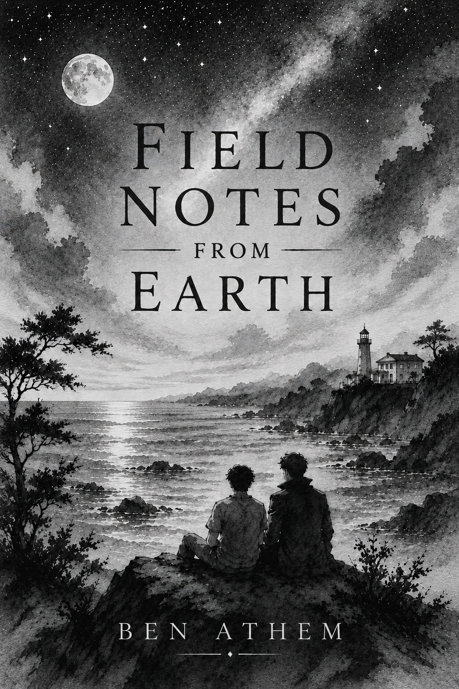

AVAILABLE NOW
Field Notes
From Earth
a novella
Leth has spent centuries studying civilizations without ever becoming part of them.
His latest assignment should be simple: observe humanity, document its behaviour, and maintain the distance required of every good researcher. Emotional attachment is forbidden. Interference is unacceptable. The people of Earth are subjects, not companions.
Then he meets Finn, a marine biologist whose easy kindness draws Leth out from behind his careful observations. What begins as professional curiosity becomes coffee, shared routines, late-night messages, and moments Leth cannot reduce to data. For the first time, he is no longer merely witnessing a life. He is being invited into one.
But Leth's presence on Earth is built on a lie, and the closer he grows to Finn, the more dangerous the truth becomes. To remain detached is to lose the first person who has ever made him feel at home. To stay is to risk everything he has known.
Field Notes From Earth is a tender queer science-fiction romance about observation, belonging, and learning that some of the universe's most important truths can only be understood by choosing to take part.
← Return to the books